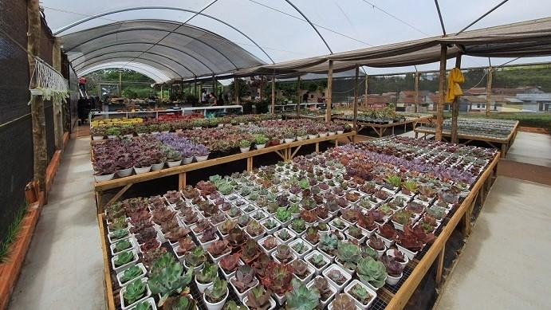
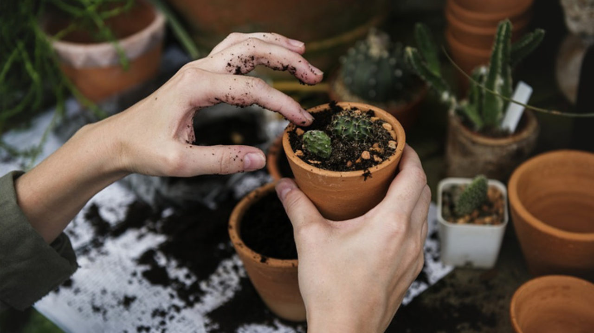
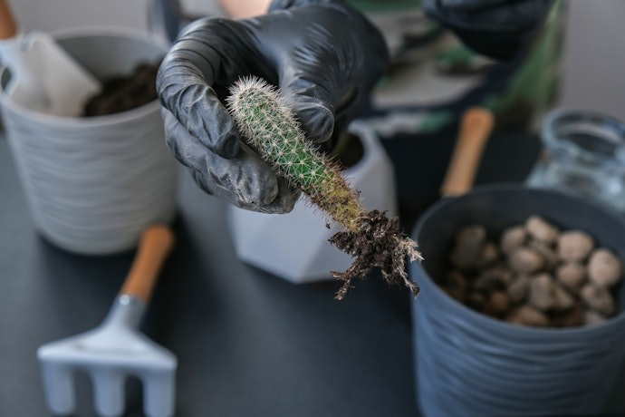

A Plantas Yo
QUEM SOMOS
Localizada em Araxá, Minas Gerais, na Plantas Yo
acreditamos que cada planta carrega vida, beleza e bem-estar
para os ambientes. Somos um espaço dedicado a todos que amam a natureza
e desejam levar um pedacinho dela para dentro de casa, do trabalho ou de qualquer lugar.
Com anos de experiência no cuidado e cultivo de espécies, especialmente suculentas
e plantas ornamentais, oferecemos não apenas produtos,
mas conhecimento e carinho em cada etapa.

PROPÓSITO
Inspirar pessoas a cuidar de pessoas.

Missão
É aproximar as pessoas
do universo verde, tornando o cuidado
com as plantas algo simples,
prazeroso e inspirador.

VISÃO
Ser referência nacional no mercado de plantas
e produtos relacionados,reconhecida como a principal comunidade online
para quem busca inspiração, conhecimento e soluções
para criar ambientes sustentáveis e cheios de vida.
VALORES
Cultivar e valorizar o verde em cada detalhe,
trabalhar com responsabilidade ambiental e social,
oferecer produtos saudáveis, duradouros e com garantia,
compartilhar conhecimento para formar novos amantes de plantas.
NOSSA HISTÓRIA
Uma história de compromisso, trabalho e dedicação.
A Plantas Yo nasceu de um sonho simples: levar mais verde para a vida das pessoas. Tudo começou em um pequeno quintal,
onde cultivávamos suculentas e plantas ornamentais apenas como um hobby. Com o tempo,
percebemos que cada muda que saía das nossas mãos levava junto um pedaço do nosso cuidado, carinho e conhecimento.
O que era apenas um passatempo virou uma missão. Investimos tempo, estudos e dedicação para entender não só as plantas,
mas também as necessidades de quem deseja tê-las por perto. Assim, construímos um espaço onde qualidade, compromisso e amor pela natureza caminham juntos.
Hoje, a Plantas Yo é mais do que uma loja: é uma comunidade que inspira e ensina. Cada planta enviada,
cada cliente atendido e cada dica compartilhada são frutos de anos de trabalho e empenho para que todos
tenham acesso à beleza e ao bem-estar que só a natureza pode oferecer.
2025 - Atendimento
Em apenas um ano de atuação,
conquistou um espaço especial no coração
dos amantes das plantas.
2025 - Informação
para a comunidade
Lançamento em 2025, o projeto ,
leva conhecimento sobre plantas
e seu cultivo para mais de
500 pessoas.Uma ação de
responsabilidade social continua.
2025 - Concientização
Um ano cultivando confiança
e reconhecimento.


